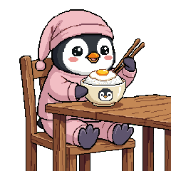
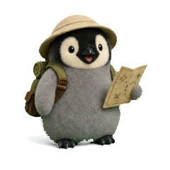
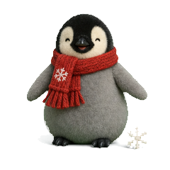
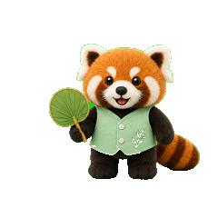
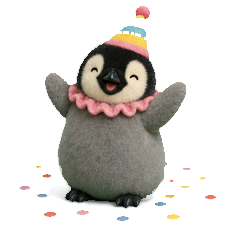

HELLO, I’M / 表情创作者

XIAOZHU GAIBEI / A WORLD FULL OF LITTLE FRIENDSSCROLL TO EXPLORE
DAILY
ALARM
小猪盖被的日常 / 企鹅豆出演我想
我想
再睡五分钟
闹钟一响，我的手就先替我做了决定：关掉，再往被子里缩一缩。
01 / 06

MY
UNIVERSE
小猪盖被 / 作品集很多小角色，
很多小角色，
都是我的表达。
软乎乎的伙伴，偶尔冒出来的小情绪，
还有替我把话说出口的彩色文字。
16 个系列200 张表情
挑一位小伙伴，展开它的表情。
STICKER DRAWER / 表情抽屉

角色 IP / 15 张
企鹅豆
围巾、被窝与小小日常。
点开看大图，收藏喜欢的那一张。
DESIGN NOTEBOOK / 设计手记作品之外，
作品之外，
还有创作的过程。
记下视觉表达的尝试、日常观察，以及那些值得回看的设计时刻。

ABOUT
你好，我是小猪盖被。
我把日常里想说的话，装进一个个小角色里。困了就盖好被子，开心就蹦一下，不知道怎么回复，就让表情替我开口。
企鹅豆是这里的主推小伙伴。小豚同事、竹圆、小鹿叽、马小满……也都住在这个世界里。画风可以不同，小情绪总能相通。
小猪盖被把日常，变成表情。
系列16
×表情200
